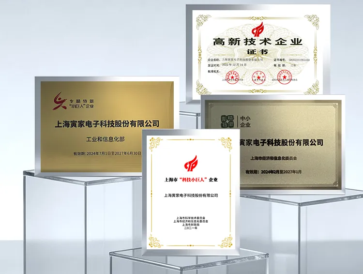

上海寅家電子科技股份有限公司（以下簡稱“寅家科技”）正式通過國家高新技術企業複審，再次榮獲由上海市科學技術委員會、上海市財政局、國家稅務總局上海市稅務局聯合頒發的《高新技術企業證書》（證書編號：GR202531005034）。

高新技術企業認定是國家為鼓勵科技創新、推動產業升級而設立的重要資質評審，對企業核心自主知識產權、科研投入、科技成果轉化能力等均有嚴格考核，是衡量企業技術創新力和發展潛力的重要標尺。
自成立以來，寅家科技堅持自主創新和長期主義，專注於全棧自研、高度集成的智能輔助駕駛、智能座艙、智能感知軟硬一體解決方案和高階域控系統研發和商業落地，致力於為客戶提供安全、高效的智能出行解決方案。公司研發團隊佔比接近三分之一，已獲得專利達200餘項。目前寅家集團已與國內外多家主流整車企業及產業鏈夥伴建立戰略合作，其智能輔助駕駛系統、智能座艙、智能感知及相關軟硬件產品已在多款乘用車及商用車型上實現規模化交付。
多年來，寅家科技接連獲得上海市科技小巨人企業、上海市專精特新中小企業等多項資質，形成了“國家級 + 市級”的多維度科創認證矩陣。此次複審通過，印證了寅家科技符合國家發展戰略，科研創新能力具備穩定性、可持續性。
2021年獲得上海市“科技小巨人”企業（上海市科學技術委員會、上海市經濟和信息化委員會、上海市財政局）
2022年獲得高新技術企業認證（上海市科學技術委員會、上海市財政局、國家稅務總局上海市稅務局）證書編號：GR202231004459
2024年獲得“專精特新”中小企業認證（上海市經濟和信息化委員會）
2024年專精特新“小巨人”企業（工業和信息化部）
